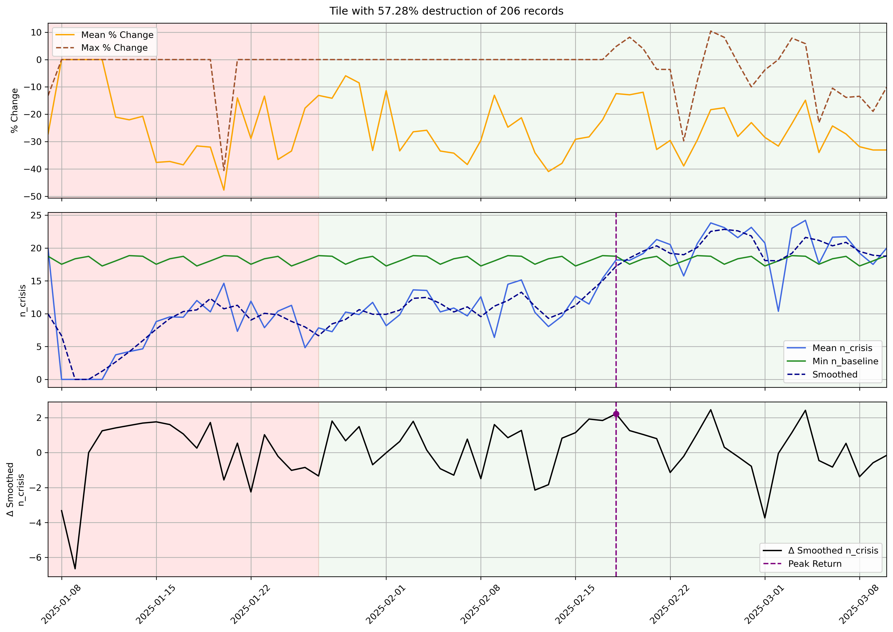
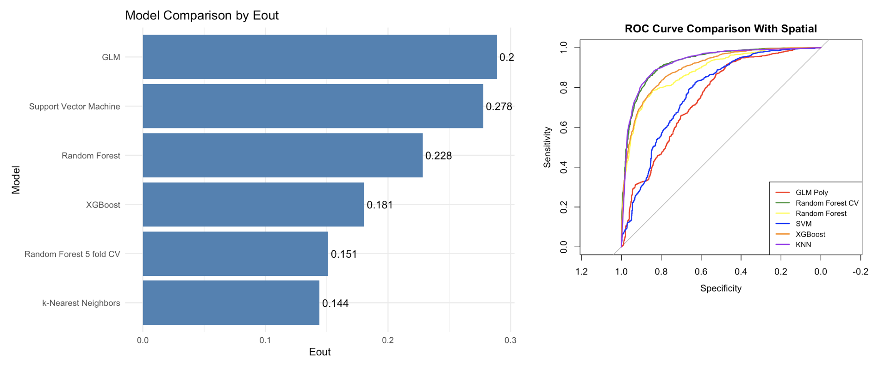

Project information
- Category: Graduate Coursework, University of Michigan (CEE 554: Data Mining in Transportation)
- Collaborators: Phillip Chacon, Margaret Miles
- Data: Facebook Population During Crisis (Data for Good); CAL FIRE Damage Inspection (DINS) records, 2025 Palisades Fire
- Tools: Python, Random Forest, XGBoost, scikit-learn
The Problem
After a wildfire, emergency managers need damage estimates quickly to unlock federal and state disaster funding. But the standard sources are both slow: satellite imagery is quick but coarse and unreliable for partial damage, while ground inspections are accurate but can't start until an area is declared safe, which can take weeks. Meanwhile, mobility data is being collected passively and in real time, and nobody had used it to fill that gap.
Approach
Using population data from the 2025 Palisades Fire, we tracked how each affected area's population dropped and recovered relative to its pre-fire baseline, then mapped that against 2,913 CAL FIRE building-damage inspection records at the same location. From the population trends alone—depth of the drop, timing of the biggest loss, volatility, recovery pattern—we engineered features and trained classifiers to predict whether a building was habitable or destroyed.

What the signal looks like: population drops sharply during evacuation and only partially recovers in a heavily-damaged area.
Key Results
- Mobility-based features alone predicted building damage with AUC > 0.84 (Random Forest and XGBoost)—before adding any location information
- Adding latitude/longitude sharpened this considerably: out-of-sample error dropped to as low as 0.14–0.18, and ROC curves for the top models hugged the top-left corner
- Random Forest — chosen as the best overall model for its balance of accuracy and interpretability — reached 85.7% accuracy and a Kappa of 0.71
- Mobility-derived features (maximum population drop, total loss, timing of the loss) remained meaningfully predictive even after location was added—the signal wasn't just "where the fire was"
- A second model testing delayed population return (>21 days post-evacuation) reached AUC up to 0.76 — a weaker but still useful signal

Model performance after adding location — error drops sharply and top models separate cleanly from chance.
Why It Matters
This is the same core problem as monitoring any safety-critical system in real time: the authoritative ground truth is slow to arrive, but a passively-collected proxy signal is available immediately—and the question is how much you can actually trust it. Here, that meant validating whether mobility data could substitute for ground inspections during a disaster response window; elsewhere, it's the same judgment call anywhere fleet or sensor data has to stand in for slower, more authoritative information.